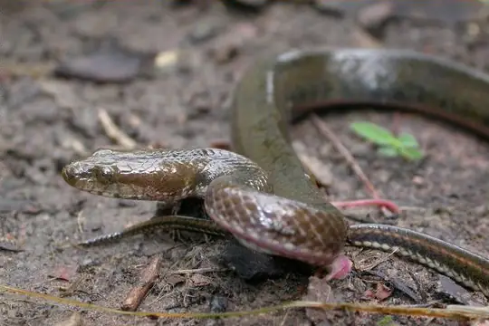

Snakes of Cambodia
83 snake species are recorded in Cambodia in SnakeList: 26 venomous and 57 non-venomous, from 12 families.
- 83species
- 26venomous
- 57non-venomous
- 12families
Species
Showing 83 species
 Annam Kukri SnakeOligodon annamensis
Annam Kukri SnakeOligodon annamensis Ashy Kukri SnakeOligodon cinereus
Ashy Kukri SnakeOligodon cinereus Asian Vine SnakeAhaetulla prasina
Asian Vine SnakeAhaetulla prasina Assam Kukri SnakeOligodon catenatus
Assam Kukri SnakeOligodon catenatus Banded KraitBungarus fasciatus
Banded KraitBungarus fasciatus- No photo yetBangkok Mud SnakeEnhydris jagorii
 Barron's Kukri SnakeOligodon barroni
Barron's Kukri SnakeOligodon barroni Bearded snakeFimbrios klossi
Bearded snakeFimbrios klossi Blanford's Bridal SnakeLycodon davisonii
Blanford's Bridal SnakeLycodon davisonii Blue Coral SnakeCalliophis bivirgatus
Blue Coral SnakeCalliophis bivirgatus Blue KraitBungarus candidus
Blue KraitBungarus candidus Bocourt's Mud SnakeSubsessor bocourti
Bocourt's Mud SnakeSubsessor bocourti Boie's Mud SnakeHypsiscopus plumbea
Boie's Mud SnakeHypsiscopus plumbea Boulenger's KeelbackHebius boulengeri
Boulenger's KeelbackHebius boulengeri Burmese BronzebackDendrelaphis subocularis
Burmese BronzebackDendrelaphis subocularis Burmese PythonPython bivittatus
Burmese PythonPython bivittatus Cambodian Kukri Snake (kampucheaensis)Oligodon kampucheaensis
Cambodian Kukri Snake (kampucheaensis)Oligodon kampucheaensis Cantor's Kukri SnakeOligodon cyclurus
Cantor's Kukri SnakeOligodon cyclurus Cardamom Mountains Green PitviperTrimeresurus cardamomensis
Cardamom Mountains Green PitviperTrimeresurus cardamomensis Cardamom Mountains Wolf SnakeLycodon cardamomensis
Cardamom Mountains Wolf SnakeLycodon cardamomensis Chinese Mountain Pit ViperOvophis monticola
Chinese Mountain Pit ViperOvophis monticola Common Bamboo ViperCraspedocephalus gramineus
Common Bamboo ViperCraspedocephalus gramineus Common Mock ViperPsammodynastes pulverulentus
Common Mock ViperPsammodynastes pulverulentus Common RingneckGongylosoma scriptum
Common RingneckGongylosoma scriptum Common SeasnakeHydrophis schistosus
Common SeasnakeHydrophis schistosus Common Wolf Snake (capucinus)Lycodon capucinus
Common Wolf Snake (capucinus)Lycodon capucinus Deuve's Kukri SnakeOligodon deuvei
Deuve's Kukri SnakeOligodon deuvei Deuve's Water SnakeHomalopsis nigroventralis
Deuve's Water SnakeHomalopsis nigroventralis Eastern Russel's ViperDaboia siamensis
Eastern Russel's ViperDaboia siamensis Eberhardt's Kukri SnakeOligodon eberhardti
Eberhardt's Kukri SnakeOligodon eberhardti Fasciolated Kukri SnakeOligodon fasciolatus
Fasciolated Kukri SnakeOligodon fasciolatus Gerard's water snakeGerarda prevostiana
Gerard's water snakeGerarda prevostiana Gold-ringed Cat Snake (dendrophila)Boiga dendrophila
Gold-ringed Cat Snake (dendrophila)Boiga dendrophila Gold-ringed Cat Snake (melanota)Boiga melanota
Gold-ringed Cat Snake (melanota)Boiga melanota Gray Cat SnakeBoiga siamensis
Gray Cat SnakeBoiga siamensis Green Cat SnakeBoiga cyanea
Green Cat SnakeBoiga cyanea Green KeelbackRhabdophis nigrocinctus
Green KeelbackRhabdophis nigrocinctus Green Vine Snake (nasuta)Ahaetulla nasuta
Green Vine Snake (nasuta)Ahaetulla nasuta Indo-Chinese Rat SnakePtyas korros
Indo-Chinese Rat SnakePtyas korros Indo-Chinese Sand SnakePsammophis indochinensis
Indo-Chinese Sand SnakePsammophis indochinensis Indo-chinese Spitting CobraNaja siamensis
Indo-chinese Spitting CobraNaja siamensis Inornate Kukri SnakeOligodon inornatus
Inornate Kukri SnakeOligodon inornatus Jack's Water SnakeHomalopsis mereljcoxi
Jack's Water SnakeHomalopsis mereljcoxi Jodi's Pipe-SnakeCylindrophis jodiae
Jodi's Pipe-SnakeCylindrophis jodiae Keeled Rat SnakePtyas carinata
Keeled Rat SnakePtyas carinata Khasi KeelbackHebius khasiensis
Khasi KeelbackHebius khasiensis King CobraOphiophagus hannah
King CobraOphiophagus hannah- No photo yetKloss' Sea SnakeHydrophis klossi
 Kramer's Pit ViperTrimeresurus macrops
Kramer's Pit ViperTrimeresurus macrops Laotian Wolf SnakeLycodon laoensis
Laotian Wolf SnakeLycodon laoensis Linne's Water SnakeHomalopsis buccata
Linne's Water SnakeHomalopsis buccata
Longtailed Mud SnakeEnhydris longicauda Malayan Banded Wolf SnakeLycodon subcinctus
Malayan Banded Wolf SnakeLycodon subcinctus Malayan Pit ViperCalloselasma rhodostoma
Malayan Pit ViperCalloselasma rhodostoma Many-spotted Cat SnakeBoiga multomaculata
Many-spotted Cat SnakeBoiga multomaculata Mekong Mud SnakeEnhydris subtaeniata
Mekong Mud SnakeEnhydris subtaeniata Monocled CobraNaja kaouthia
Monocled CobraNaja kaouthia Mouhot's Cambodian Kukri SnakeOligodon mouhoti
Mouhot's Cambodian Kukri SnakeOligodon mouhoti Mountain Slug SnakePareas margaritophorus
Mountain Slug SnakePareas margaritophorus Müller's Blind SnakeArgyrophis muelleri
Müller's Blind SnakeArgyrophis muelleri Nganson BronzebackDendrelaphis ngansonensis
Nganson BronzebackDendrelaphis ngansonensis Ocellated Kukri SnakeOligodon ocellatus
Ocellated Kukri SnakeOligodon ocellatus Oriental RatsnakePtyas mucosa
Oriental RatsnakePtyas mucosa Radiated RatsnakeCoelognathus radiatus
Radiated RatsnakeCoelognathus radiatus Rainbow Mud SnakeEnhydris enhydris
Rainbow Mud SnakeEnhydris enhydris Red-headed KraitBungarus flaviceps
Red-headed KraitBungarus flaviceps Red-tailed Pipe SnakeCylindrophis ruffus
Red-tailed Pipe SnakeCylindrophis ruffus Saint Giron's Kukri SnakeOligodon saintgironsi
Saint Giron's Kukri SnakeOligodon saintgironsi Siamese Blind SnakeArgyrophis siamensis
Siamese Blind SnakeArgyrophis siamensis Southeast Asian BockadamCerberus schneiderii
Southeast Asian BockadamCerberus schneiderii Speckled Coral Snake (maculiceps)Calliophis maculiceps
Speckled Coral Snake (maculiceps)Calliophis maculiceps Striped Kukri SnakeOligodon taeniatus
Striped Kukri SnakeOligodon taeniatus Tay Ninh Mud SnakeEnhydris innominata
Tay Ninh Mud SnakeEnhydris innominata Tentacled SnakeErpeton tentaculatum
Tentacled SnakeErpeton tentaculatum Triangle KeelbackXenochrophis trianguligerus
Triangle KeelbackXenochrophis trianguligerus Triangle Many-tooth SnakeSibynophis triangularis
Triangle Many-tooth SnakeSibynophis triangularis Vogel's Pit ViperTrimeresurus vogeli
Vogel's Pit ViperTrimeresurus vogeli White-lipped PitviperTrimeresurus albolabris
White-lipped PitviperTrimeresurus albolabris Yellow striped SnakeCoelognathus flavolineatus
Yellow striped SnakeCoelognathus flavolineatus Yellow-spotted Keelback Water SnakeFowlea flavipunctatus
Yellow-spotted Keelback Water SnakeFowlea flavipunctatus- No photo yetZoos Victoria's Wolf SnakeLycodon zoosvictoriae
- No photo yetAcrochordus dubius
- No photo yetCraspedocephalus rubeus
No snakes in Cambodia match.
Cambodia’s snakes in numbers
- Families: Colubridae 41, Homalopsidae 13, Elapidae 10, Viperidae 9, Cylindrophiidae 2, Typhlopidae 2, Acrochordidae 1, Pareidae 1, Psammophiidae 1, Pseudaspididae 1, Pythonidae 1, Xenodermidae 1.
- 2 are recorded in no other country in SnakeList: Cambodian Kukri Snake (kampucheaensis), Longtailed Mud Snake.